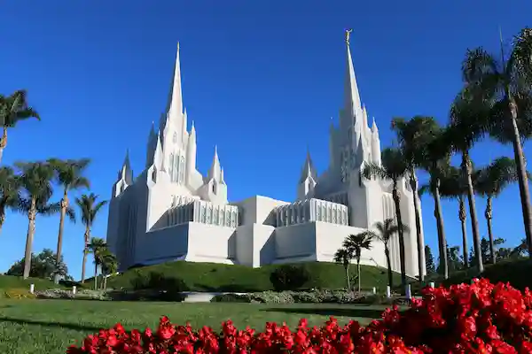

Temple Album
☰
Home
Old
New
Large
Small
Home

San Diego Temple
San Diego Temple
San Diego Temple
Mexico City Temple
Mexico City Temple
Mexico City Temple
Puebla Temple
Puebla Temple
Puebla Temple
![A twilight, low-angle shot of the Mexico City Mexico Temple, a grand white structure inspired by ancient Mayan architecture. The temple features a flat-topped design with intricate geometric carvings and a single central spire topped with a gold statue. In the foreground, a wide stone staircase leads up to the entrance, flanked by a tranquil water fountain on the left and a stone monument on the right. The lush green lawn is accented by tropical plants and palm trees, all set against a dramatic, cloudy blue dusk sky.](images/mexico-city-temple-opt.webp)
![A serene, wide-angle shot of the Puebla Mexico Temple during a vibrant pink and purple sunset. The temple is a classic, white stone building with a central tiered tower topped by a gold statue. Its architecture features elegant windows and a red-tiled roof, reflecting a Spanish Colonial influence. The foreground consists of a neatly paved walkway that curves past a lush green lawn. Several tall palm trees and black vintage-style lamp posts are scattered throughout the grounds, which are softly illuminated as the daylight fades. The sky is filled with wispy, colorful clouds, creating a peaceful and warm atmosphere.](images/puebla-temple-opt.webp)